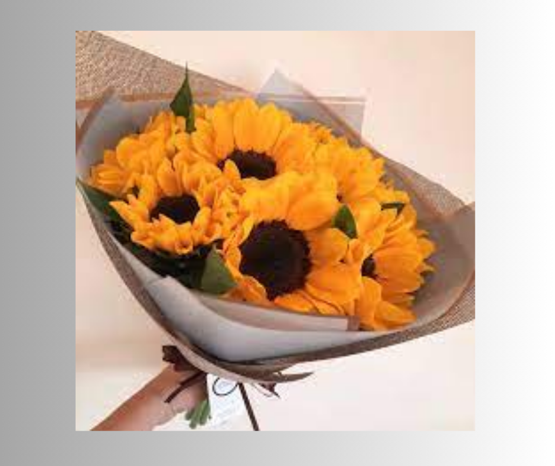
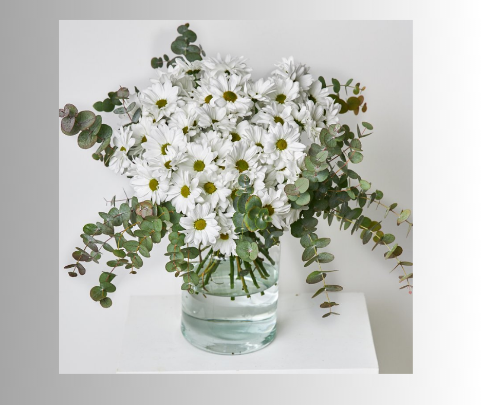
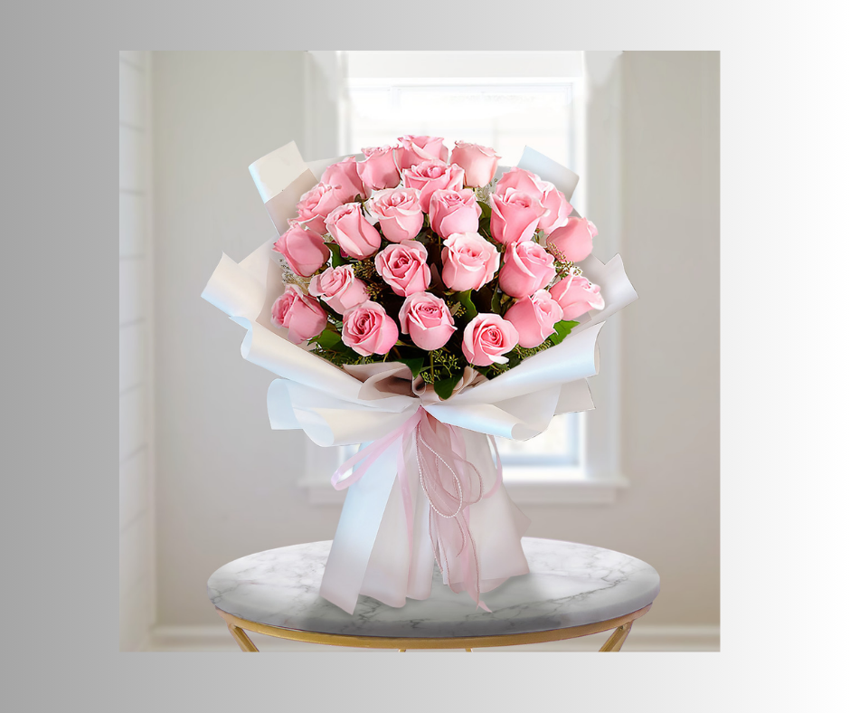
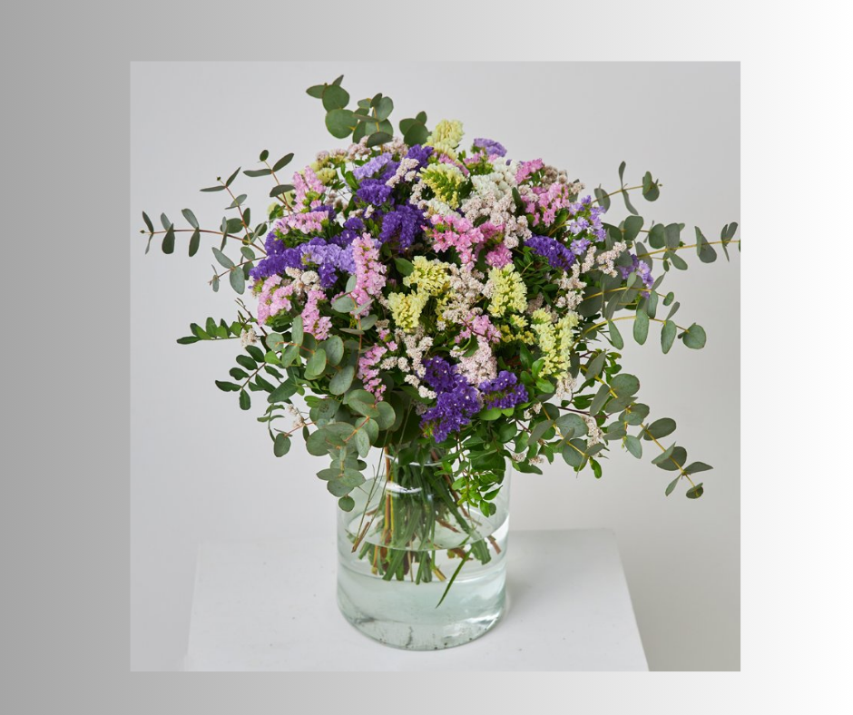

Regala flores
Regalar flores es mucho más que un simple obsequio; es una forma de comunicar emociones, embellecer la vida de alguien y fortalecer las relaciones. Es un gesto intemporal que demuestra aprecio, amor y cuidado en una forma hermosa y natural.
¡Planta hoy tus sueños y déjalos crecer!
Galería de Flores



